腾讯云代码助手支持对企业内用户的使用情况进行度量统计，帮助企业管理者观测提效成果、优化提效方案。研效度量提供以下能力：
研效看板：对企业使用情况进行汇总统计，适用于度量企业整体的研效情况。
成员数据：查看每个企业成员的数据情况，适用于细节评估与具体分析。
研效看板
进入 腾讯云代码助手管理端，选择数据统计 > 研效看板。您可以发现，当前研效看板已经全新升级，支持查看更新后的指标数据，历史数据需要切换到旧看板。看板中支持指标视图和趋势视图两种视图方式进行切换查看。每种视图下都包含有活跃情况、对话指标、补全指标三类指标参数。此外，补全指标中支持按语言进行展示和分析。整体面板比较清晰，每个指标也有详细的计算方式介绍。
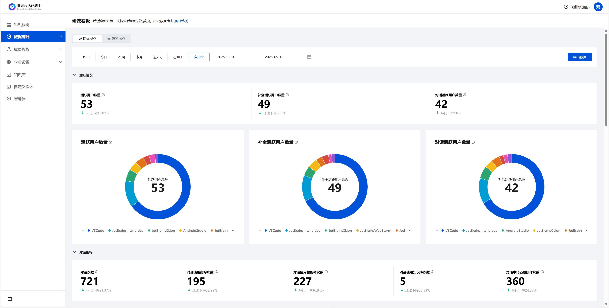
指标视图
- 活跃情况
活跃情况分类中包含了活跃用户数量、补全活跃用户数量、对话活跃用户数量三个指标，每个指标都有文本和图卡的形式进行展示，而且可以清楚地看到每种 IDE 的活跃数量占比情况。
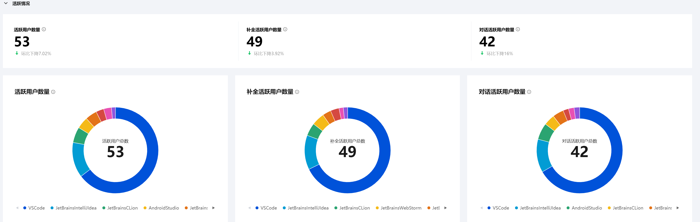
- 对话指标
对话指标分类中包含对话次数、对话使用指令次数、对话使用智能体次数、对话使用知识库次数、对话中代码段操作次数五个指标，基本上每个指标都有文本和图卡的形式进行展示。
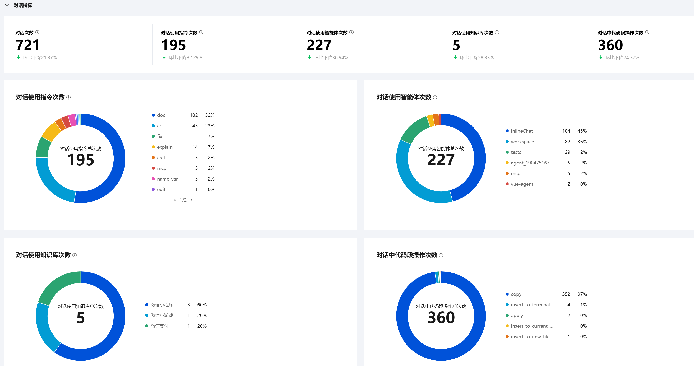
- 补全指标
在补全指标分类中，分为按次统计、按行统计和按字符统计三种不同口径的统计方式，每种统计方式下包含对应的指标，每个指标支持按语言进行展示，帮助您进行深入分析。
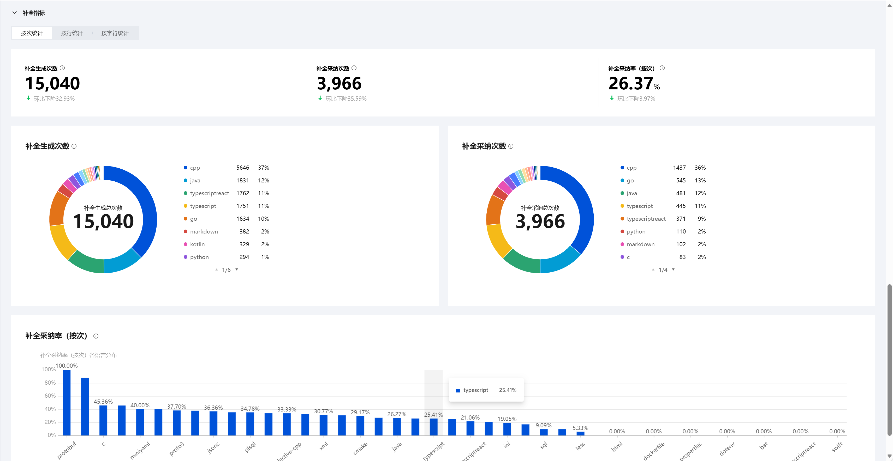
作为企业管理者，最关注的概念是“代码助手帮助企业生成了多少代码”，而这个概念，代码助手将其量化出来，被称为补全生成率，下面为您介绍这个指标的计算逻辑。
根据计算口径的不同，补全生成率可以按行或按字符进行计算：
按行计算
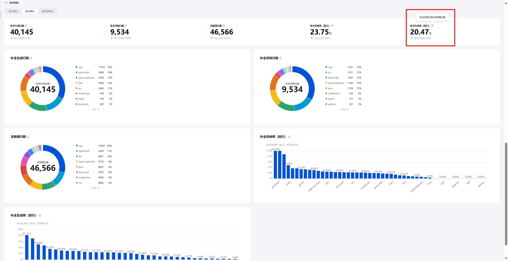
补全生成率（按行）=（补全采纳行数 / 总新增行数）× 100%。例如，若补全生成率（按行）= 20%，则代表在统计时间段内，每 100 行代码中有 20 行 是通过代码助手生成的。
按字符计算
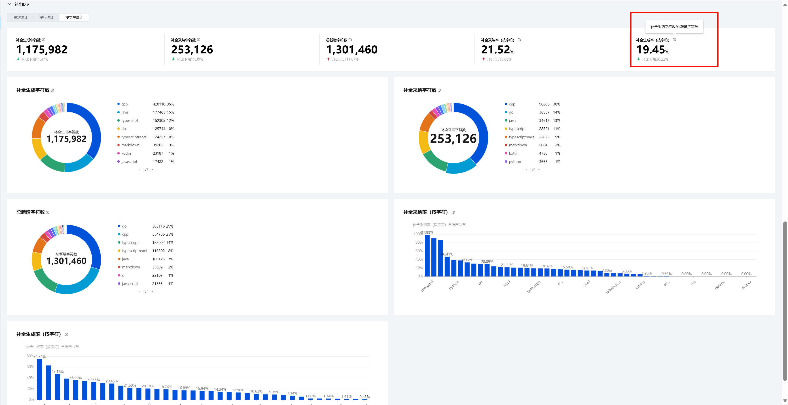
补全生成率（按字符）=（补全采纳字符数 / 总新增字符数）× 100%。例如，若补全生成率（按字符 ）= 20%，则代表在统计时间段内，每生成 100 个 字符中有 20 个字符是通过代码助手生成的。这种计算方式更为精细，适用于需要更高精度的场景。
通过补全生成率，可以帮助企业量化出代码助手对于企业的研发提效有多大作用，进而也就能够衡量在这方面的投产比，做到可量化、可观测。
趋势视图
在趋势视图中，各种指标基本上与指标视图中一一对应。
- 活跃情况
活跃情况分类中包含了活跃用户数量、补全活跃用户数量、对话活跃用户数量三个指标，每个指标可以按多种不同的 IDE 进行清晰展示。例如，可以对本月各 IDE 的活跃数量的趋势线进行查看并分析。
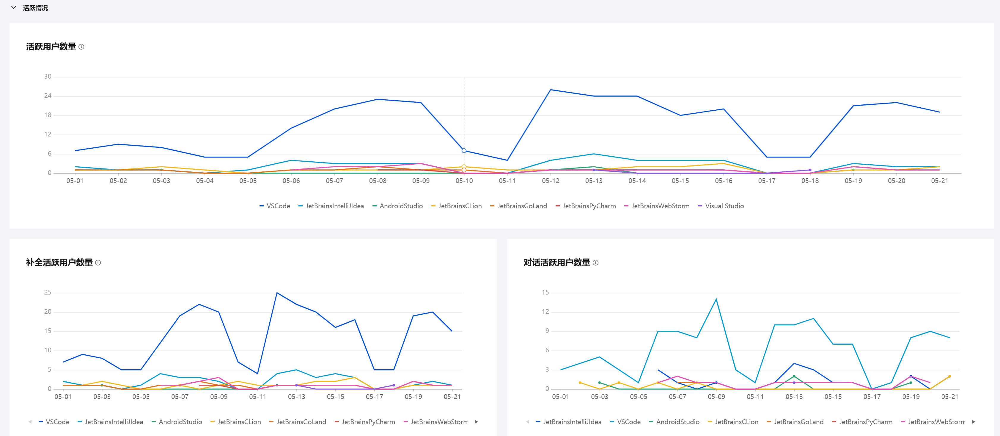
- 对话指标
对话指标分类中包含对话使用指令次数、对话使用智能体次数、对话使用知识库次数、对话中代码段操作次数四个指标，可以查看这四个对话指标的具体使用次数情况。例如。可以对本月各对话指标的趋势线进行查看并分析。
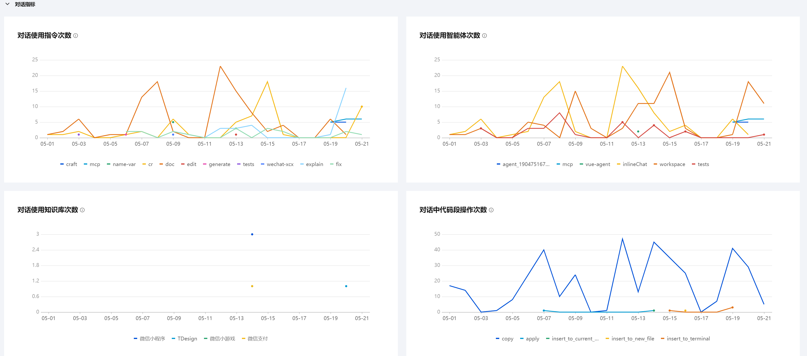
- 补全指标
在补全指标分类中，同样分为按次统计、按行统计和按字符统计三种不同口径的统计方式，每种统计方式下包含对应的指标，每个指标支持按语言进行清晰展示。例如，可以对各个指标下不同语言的趋势线进行查看并分析。
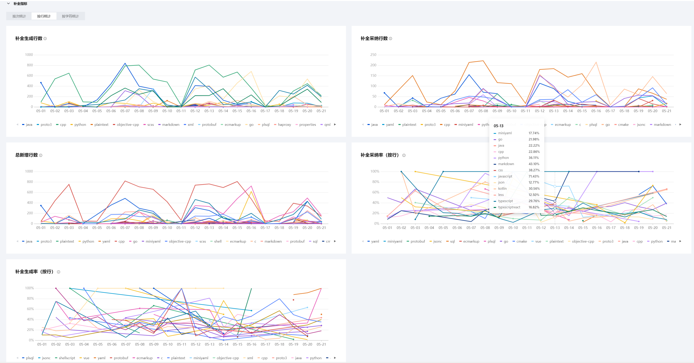
指标描述
下面是各项指标的描述：
| **指标名称** | **指标含义（统计周期内）** |
| 活跃用户数量 | 使用过补全或对话的用户数量 |
| 补全活跃用户数量 | 使用过补全的用户数量 |
| 对话活跃用户数量 | 使用过对话的用户数量 |
| 对话次数 | 使用对话的总次数 |
| 补全次数 | 触发补全的总次数 |
| 补全行数 | 补全生成的总行数 |
| 补全字符数 | 补全生成的总字符数 |
| 补全采纳次数 | 采纳补全内容的总次数 |
| 补全采纳行数 | 采纳补全内容的总行数 |
| 补全采纳字符数 | 采纳补全内容的总字符数 |
| 补全采纳率（按次） | 补全采纳次数/补全次数 |
| 补全采纳率（按行） | 补全采纳行数/补全行数 |
| 补全采纳率（按字符） | 补全采纳字符数/补全字符数 |
| 总新增行数 | 总新增的代码行数，包括用户手动输入与补全采纳行数 |
| 补全生成率（按行） | 补全采纳行数/总新增行数 |
| 总新增字符数 | 总新增的代码字符数，包括用户手动输入字符数与补全采纳字符数 |
| 补全生成率（按字符） | 补全采纳字符数/总新增字符数 |
说明：
对于总新增行数或总新增字符数：包括用户手动键入与补全采纳，如果是复制或导入的代码，需要限制在5行内，超过5行属于大幅度键入，不计入统计。
对于新增的代码（包括用户手动键入和补全采纳生成的代码、注释），新增加的会计入统计，删除的不会计入统计，例如：新增了10行代码，而后又删除，则新增行数仍为10行。
对于补全次数：用户只要触发了代码补全，不管有没有执行采纳或拒绝操作，均会计入统计，不受后续操作的影响。补全行数和补全字符数亦同理。
补全次数/行数/字符数与补全采纳次数/行数/字符数的区别：后者（补全采纳）需要用户执行采纳操作（例如 tab 等），才会计入统计；而前者不管有没有执行采纳操作，均会计入统计。
对于注释：补全生成的注释，以及采纳，均会计入指标的统计内。
统计时间维度筛选和数据导出
看板支持按照统计时间维度进行筛选。此外，也支持各项指标的数据导出。
成员数据
进入 腾讯云代码助手管理端，选择数据统计 > 成员数据。
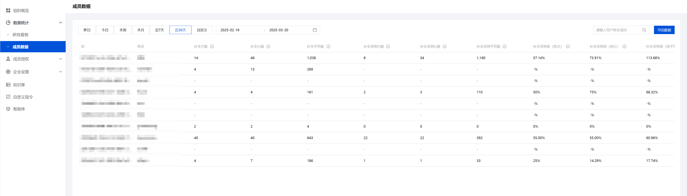
看板支持补全次数、补全行数、补全生成率（按行）、补全生成率（按次）等各项指标统计，鼠标停留在上可以展示指标描述内容。
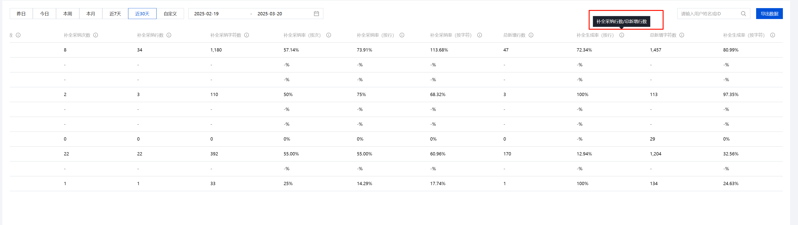
看板支持筛选统计时间维度。
支持按用户姓名或 ID进行数据筛选，同时支持一键导出数据，将数据导出为 Excel 文件。
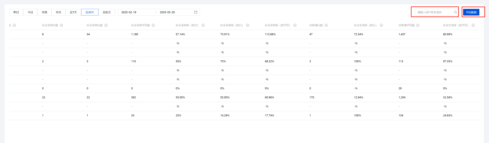
说明：
- 对于用户数据导出存在为空内容：主要存在对话次数、补全采纳次数、补全采纳率等指标中。原因解释：在统计周期内，用户触发补全但未执行采纳操作或从未触发过对话导致补全采纳率或对话次数等指标数据计算为空。
- 研效度量数据同步需要15分钟时间，因此若出现其它数据显示异常情况，可等待15分钟同步时间后再进行确认。